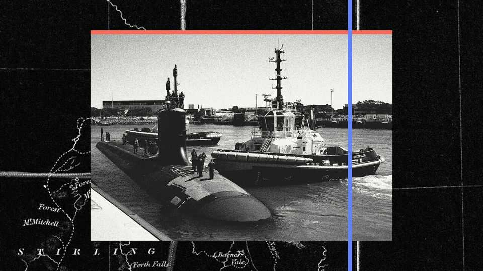
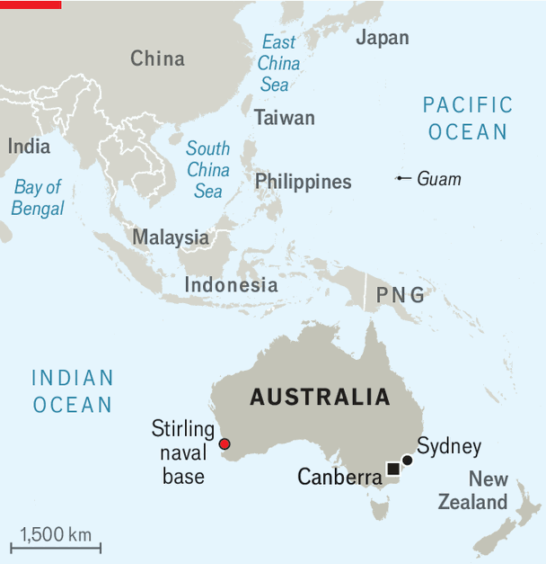
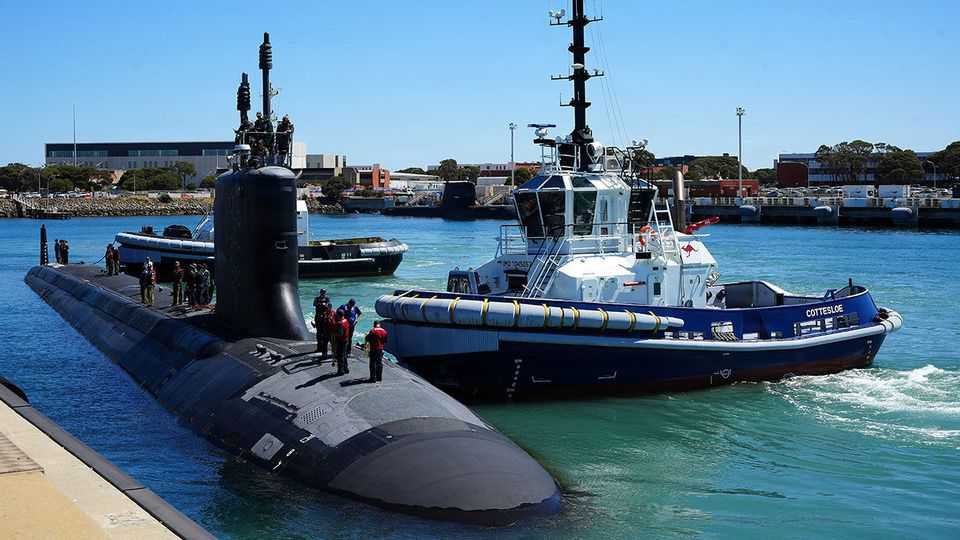
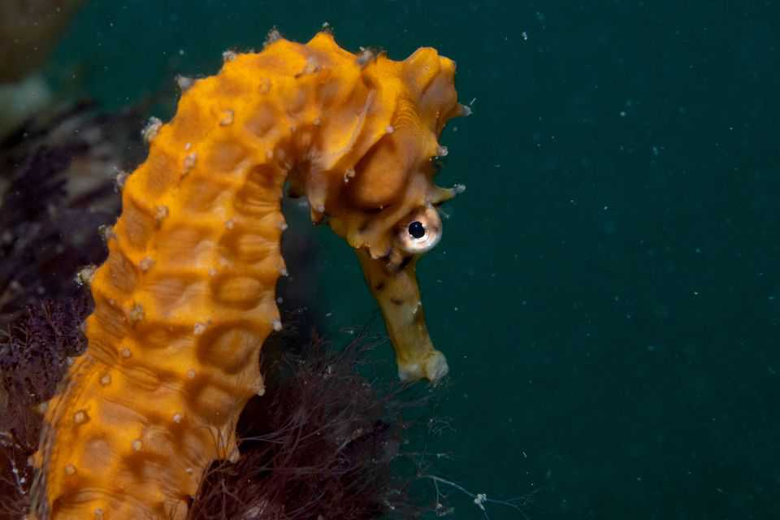

Inside America’s first new submarine base abroad for 53 years
AUKUS is beginning to make waves on Australia’s west coast

Nov 12th 2026
Seahorse hotels had to be built first. The bony fish off Western Australia’s coasts are bad swimmers, spending most of their lives with their tails hooked around bits of rock, or human artefacts like piers and docks. So when the Royal Australian Navy began to upgrade HMAS Stirling naval base to host nuclear-powered submarines, divers were sent to relocate 263 of the creatures to grids of rebar nearby.
No detail is too small as Australia readies Stirling to host American nuclear-powered attack submarines from next year. That will make it the first American submarine base to be established abroad in half a century, turning it into a port that will project American power deep into Asia. Its site offers a big advantage over America’s existing bases: unlike its one at Guam, it is out of range of all but the most advanced conventional land-based Chinese missiles, but closer to Asian waters than other American submarine bases.
It is also the first big milestone for AUKUS, a deal that was announced five years ago by America, Australia and Britain to jointly design and build nuclear-powered submarines. The American presence at Stirling is part of the first phase, enabling Australian sailors to learn how to sail America’s Virginia-class attack submarines. They will deploy on the boats and maintain them at Stirling. One, USS Colorado, has just arrived at the base for a workover by the Australians, and will return for good at the end of 2027.

In a second phase, Australia is to buy from America and operate its own Virginias in the early 2030s, though there are doubts over whether these will be delivered on time or at all. Finally, Australia and Britain are to jointly design, build and operate a new class of nuclear-powered submarine. The first Australian boat would begin operation in the 2040s. Despite mischief from Chinese spokesmen, no nuclear weapons are involved, only nuclear power. That would let Australian subs range much farther than the country’s current diesel-powered boats without surfacing, giving Australia a punchier deterrent.
AUKUS remains controversial. Much of it was negotiated in secret because Australia was under contract at the time to buy French diesel-powered subs. When that contract was cancelled and AUKUS announced in 2021, it set off a big row. Only afterwards did it become clear to the plotters what a huge challenge it would be. Creaky shipyards in America and Britain would need a big jab of cash to meet the production targets. Some is coming from Australia, which has already handed over $2.6bn of a pledged $6.2bn. That, says Jennifer Parker of the Lowy Institute, a think-tank in Sydney, “is a drop in the bucket compared to what is needed”. But it is a real sign of Australia’s commitment.

This may help explain why a transactional Donald Trump has mostly left the deal alone, last year saying it was moving “full speed ahead”. But if the cash infusion does not jolt the Anglo-American submarine industrial base out of its torpor, Australia risks ending up with fewer boats than promised. Hence some Australians, particularly those sceptical of the alliance with America, still oppose AUKUS.
But Australia gets quite a bit else out of the deal. In order to share with a new partner the closely held technology used to build and operate nuclear reactors under the oceans, America and Britain have both had to revamp laws and regulations on sharing their most sensitive defence-tech secrets. These have brought Australia into the innermost sanctum of American alliances, in a circle previously occupied only by Britain. It has also unlocked related co-operation between the three on other cutting-edge technologies like AI, quantum computing and hypersonic missiles.
But the biggest development has been the decision to base four American submarines at Stirling, an hour’s drive south of Perth. That was not in the original AUKUS plan, and is a major change in plans for American forces in case of a conflict with China. The base will stay under Australian control; officially the foreign submarines will merely “rotate” through it. But that is a sleight of hand; each American sub will operate from Stirling for one to two years at a time. (A British sub may come to visit now and then, too.)
The American presence will be known as Submarine Rotational Force-West (SRF-W):“Surf West”. Already $1.5bn has been spent on readying the base for American subs, with another $4.1bn planned. At one pier, crews are driving concrete piles into the seabed (displacing those seahorses) to let it withstand pressure from the 7,000-tonne nuclear-powered sub in bad weather. Engineers are installing five different types of back-up power. Even a vessel with its own nuclear reactor needs auxiliary power, to prevent a meltdown while the reactor is undergoing maintenance.

An American commodore will command the American navy’s newly set-up Submarine Squadron 3 from Stirling. Secure communication equipment has been installed to let him talk to the Pentagon over classified channels. Nearby, housing is going up for some of the 1,200 American sailors under his command, along with a tax-free grocery shop stocking American snacks, open only to American sailors and their families. The island’s cricket oval has been taken over by building crews; a basketball court has taken its place nearby.
Enormous questions persist over AUKUS. The three countries’ plans foresee three to five Australian-flagged Virginias joining the American ones at Stirling in the early 2030s. But to meet the needs of both Australia and America, shipbuilders in Connecticut, Rhode Island and Virginia will have to raise their output from 1.2 boats a year to 2.3 by 2031. If they cannot, a future American president might not release any to Australia.
Even bigger questions loom about the capacity of Britain’s shipyards and nuclear industry, tasked with building 12 of the new AUKUS-class boats due to enter service in the late 2030s, instead of the seven that Britain first planned. If America and Britain cannot invigorate their shipyards, they could leave Australia with a nuclear-submarine base but no nuclear-powered submarines of its own. ■
For exclusive coverage of Asian politics, economics and security, sign up to Asia Bulletin, our weekly subscriber-only newsletter.